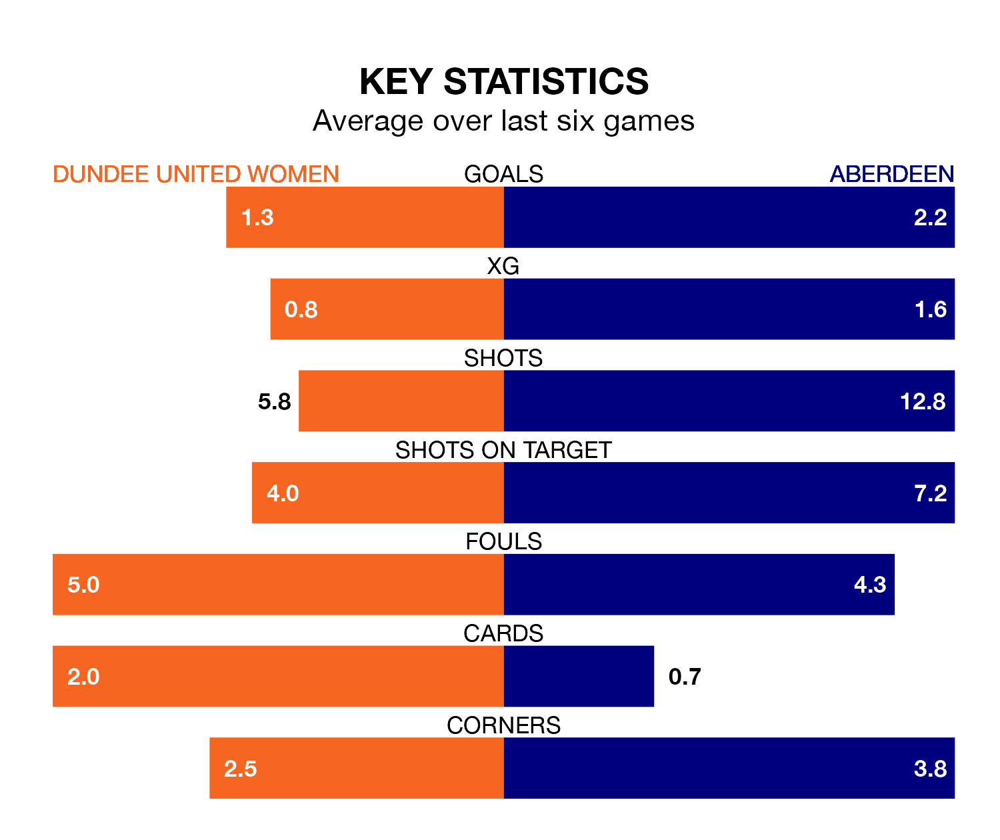

Dundee United Women welcome Aberdeen to Foundation Park on Sunday looking to pick up points to end their 14-game losing streak.
Dundee United's struggles have left them with no points from their last six SWPL 1 matches, while their opponents have earned 12 from a possible 18.
Dundee United are bottom of the table after 26 games, of which they have won three and drawn one, earning 10 points.
Aberdeen are five places ahead of the home team in seventh, with 11 wins and one draw putting them on 34 points.
In Bayley Hutchison, the visitors have one of the league's most on-form strikers so far this season. She has notched 21 goals in 26 appearances, to sit second in the scoring charts.
Her goal rate of one every 107 minutes is much quicker than that of Rachel Todd, Dundee United's top scorer with a goal every 283 minutes, and a total of eight goals in 26 games.
In the last 10 years, Dundee United and Aberdeen have played each other on eight occasions. Dundee United won two of them and Aberdeen six.
On average, Dundee United scored 2.1 goals and Aberdeen 2.9 in those matches.
Their last meeting was on February 18, when Aberdeen won 4-3 at home.
With 24 goals in 26 games so far this season, Dundee United are the league's lowest scorers with 0.9 goals per game. And they are conceding more than average, letting in 98 goals at a rate of 3.8 per game.
Aberdeen are also below average scorers, with 1.6 goals per game, compared to a league average of 2.1. They have conceded 3.0 goals per game.
Dundee United's last match was on Wednesday, a 5-2 loss against Hamilton Academical, with Morgan Steedman and Nicola Jameison getting the goals for Dundee United.
Aberdeen beat Montrose Women 3-2 last time out, also on Wednesday, with Hutchison (two) and Hannah Innes on the scoresheet.
Updated: 15:40 (UTC), 18/04/24